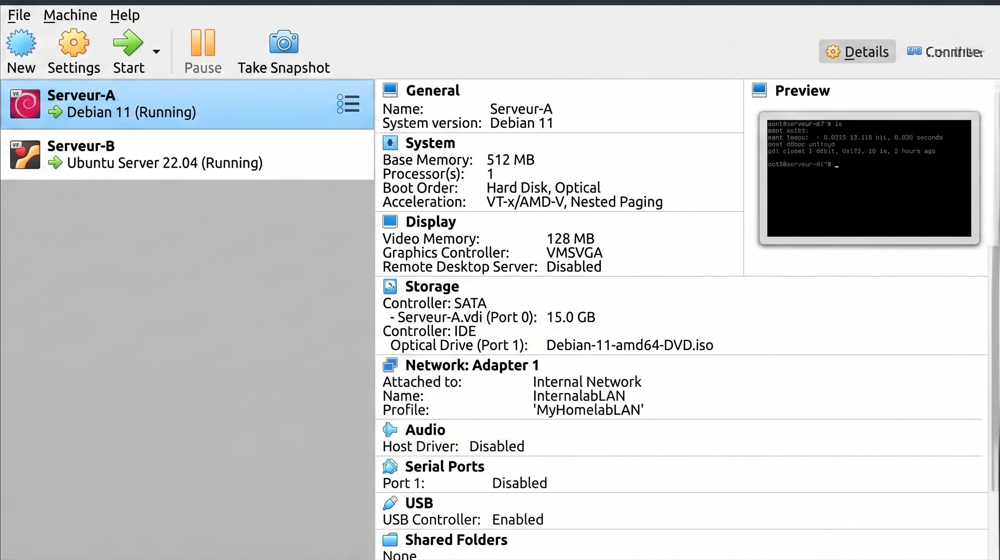
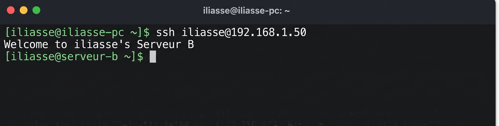
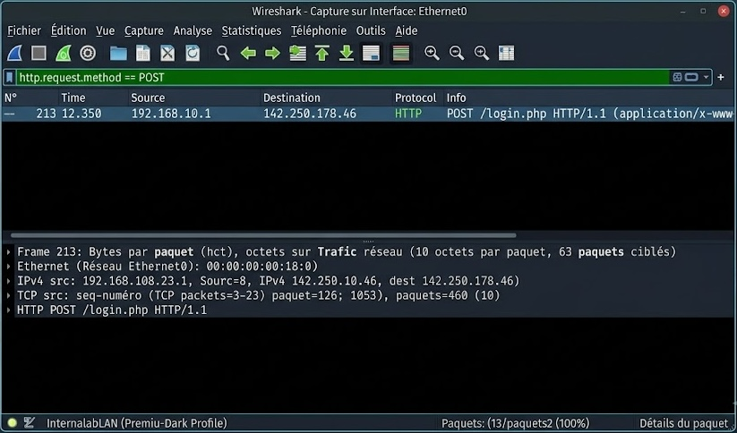
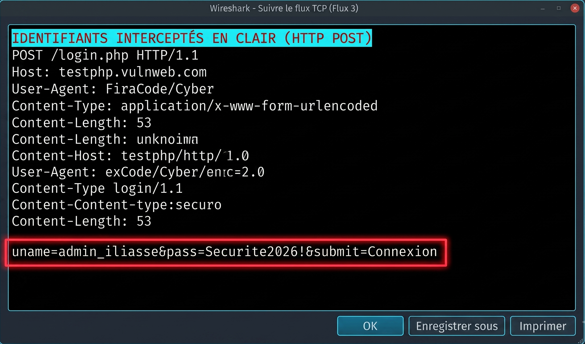

01. À propos de moi
Passionné par l'informatique et les infrastructures réseaux, je me prépare à intégrer une formation spécialisée.
Actuellement en apprentissage autodidacte (notamment via OpenClassrooms), je consolide mes bases techniques à travers des projets pratiques orientés système et sécurité pour être rapidement opérationnel au sein de vos équipes.
02. Mes Projets Pratiques
- 🌐 Portfolio Web Création et hébergement de ce site (HTML/CSS, GitHub Pages).
- 🖥️ Réseau Virtuel Déploiement d'un Homelab, configuration IP et tests de communication (Linux, SSH).
- 🛡️ Analyse Trafic Interception de trames et analyse de protocoles avec Wireshark.
03. Contact
Je suis à la recherche d'un stage pour consolider mes acquis et m'investir avec motivation au sein de votre service informatique.
abouinan@hotmail.com
04. Profil Pro & Curriculum Vitae
Mon Parcours & Expériences
Administrateur Systèmes, Réseaux et Cybersécurité
Intégration d'un cursus spécialisé à IRIS Campus Montpellier pour approfondir le déploiement d'infrastructures et la sécurisation des SI.
Auto-formation (OpenClassrooms)
Parcours Admin Système/Réseaux (en cours) et Développeur Web (2025). Compréhension de l'architecture client/serveur, fonctionnement des API et création d'interfaces.
Expériences en Service Client (Support)
Agent d'accueil (Basic Fit) et Gestionnaire (Airbnb). Développement d'une forte capacité de gestion des requêtes, d'autonomie et d'application stricte des protocoles de sécurité.
Stack Technique & Outils
Savoir-être & Atouts (Soft Skills)
- Support Utilisateur : Très à l'aise dans le contact humain, gestion des réclamations et relation client.
- Résolution de problèmes : Gestion efficace des requêtes utilisateurs et résolution rapide des incidents de premier niveau.
- Adaptabilité Technique : Proactivité dans l'apprentissage et forte capacité d'auto-formation continue.
05. Focus Projet : Déploiement d'un Homelab
Objectif technique : Créer un environnement virtuel isolé pour configurer et tester la communication réseau entre deux serveurs Linux en ligne de commande (CLI), simulant l'architecture d'un réseau d'entreprise interne. (Cliquez sur les cartes pour agrandir)

1. Architecture & Isolation
Configuration de deux machines virtuelles sous Linux via l'hyperviseur VirtualBox. L'interface réseau est volontairement configurée en mode "Réseau Interne" pour créer un switch virtuel totalement isolé d'Internet.

2. Adressage IP & Connectivité
Attribution manuelle des adresses IP fixes dans les fichiers de configuration système (absence de serveur DHCP). Le test de communication via la commande ping valide le bon transit des paquets sur le réseau local.

3. Accès Distant Sécurisé (SSH)
Simulation d'une administration à distance. Utilisation du protocole SSH pour prendre le contrôle du Serveur B depuis le Serveur A. Le changement de l'invite de commande confirme l'accès sécurisé à la machine cible.
06. Focus Projet : Analyse Réseau & Interception (Wireshark)
Objectif technique : Démontrer l'importance du chiffrement des données en interceptant et en analysant le trafic réseau non sécurisé à l'aide d'un analyseur de protocole. (Cliquez sur les cartes pour agrandir)

1. Capture & Filtrage de Trames
Écoute du trafic réseau lors d'une authentification sur un environnement web non sécurisé (HTTP). Utilisation de requêtes de filtrage ciblées (http.request.method == POST) pour isoler l'envoi du formulaire de connexion parmi le bruit réseau.

2. Analyse du Flux TCP (Interception)
Reconstitution du flux TCP (Follow TCP Stream). Mise en évidence de la faille de sécurité majeure : les identifiants (utilisateur et mot de passe) transitent en clair (Plaintext) sans aucun chiffrement.
Interception : uname=admin_iliasse&pass=Securite2026!